Until now, the focus of this book has been on the architecture of the organization without regard for how teams are structured. This chapter talks about how security architects can construct security measures that are compatible with the organizational structure of a microservice-based organization and how they can focus on the human aspect of security design.
It’s our job as security professionals to make sure that every employee within our organization has a smooth experience with the security mechanisms in place. A company’s security team should empower employees by equipping them with the right protection that keeps them safe from threats both external and internal, while ensuring that individuals don’t need to deal with systems in which they are not trained. At the same time, employees should be able to carry on with their work without the fear of running into a state where employees experience friction while performing their day-to-day job, also known as “security hell.”
It is often said that the road to “security hell” is paved with good intentions. Many individuals with good intentions believe their actions are beneficial for the organization at large. As a result, a blunt increase in security practices may negatively impact developers and result in less efficiency. Many organizations go overboard with security measures that make it harder for legitimate employees to do their work. Often, there is a trade-off between security and autonomy. In this chapter, I aim to provide employees and teams with as much autonomy and flexibility as possible without compromising on security.
In large organizations, the teams closest to the action are best equipped to grasp the security parameters and identify any potential threats. Hence, instead of concentrating security policy and control in a centralized security team, it will be important to delegate as much control as possible to the individual teams. The delegation will include checks and balances that need to be put in place to ensure that rogue teams or disgruntled employees do not turn into malicious actors who pose a threat.
This chapter will first talk about the different types of organizational structures (org structures) that exist across companies. I will then talk about the different roles that employees play in these organizations and how these roles can benefit from various AWS tools. The general idea will be to grant teams as much autonomy as possible so they can perform their job without overhead, enabling them to innovate for the company. At the same time, there will be security controls to ensure that autonomous teams, disgruntled employees, or compromised actors are not allowed to breach the security of the application.
When organizations are small, operations may rely on informal procedures to add security controls while adding value. Teams working on different subdomains may work closely with one another in a synergistic way to create software. A team that needs to use shared resources approaches their software administrator, who grants them elevated permissions. There is trust, a shared understanding, and mutual respect among teams when it comes to using shared resources—formal guidelines seem unnecessary. When there is a security incident, you can pull together a team of developers, administrators, and stakeholders who are all committed to mitigating the incident since they all share a common goal of adding value to the process. However, such a tribal approach toward software development does not scale well.
As soon as an organization scales, clearly defined processes need to be put in place to guide development and communication around subdomains in microservice architectures. These processes need to govern resource sharing and permissions and help make teams autonomous while still imposing checks and balances. They need to account for processes during regular development as well as incident-response processes. In this section, I will talk about the various organizational structures that exist within companies today, and then briefly introduce you to tools that can help you design a permissions structure that uses cloud resources to gain the controlled autonomy you desire.
In 1967, when computer science was still in its infancy, a software programmer, Melvin Conway, came up with an amusing yet interesting adage that became known as Conway’s law: Any company that designs a system will produce a design whose structure is a copy of the company’s organizational structure.
This statement highlights the tendency for companies to build software that reflects their own org structures, which results in software that is more complex than necessary. For example, as Eric S. Raymond once said, “If you have four groups working on a compiler, you’ll get a 4-pass compiler.” Conway’s law has sparked many debates about the efficacy and the rationale behind this observation.
A research paper published in Harvard Business Review in 2008 supports the notion that the product lines of most organizations mirror their departmental structure, calling it the “mirroring hypothesis.” And I vouch for the same from my own professional experience. I have seen most organizations begin product development by identifying the development team, thus assuming that there is a one-to-one mapping between the product and the development team.
One of the biggest criticisms of such organizations that embody Conway’s law is the lack of alignment between application design and consumer needs. Domain-driven design (DDD) attempts to bridge this gap by developing systems whose designs are based on functional and consumer domains instead of the organizational team structure.
In his book Architecting for Scale (O’Reilly), Lee Atchison introduces a concept called Single Team Oriented Service Architecture (STOSA). In a STOSA-based application, teams have clear ownership of the services and domains they are responsible for. Conversely, there are no overlapping claims of ownership for any services (and more broadly, domains) that exist within a STOSA application, thus providing a good 1:1 mapping between services and teams in an organization. STOSA-based architectures help businesses develop software that aligns well with their org structures.
Now, going back to a domain-driven organization, the application is generally divided into bounded contexts. Organizations that follow the STOSA architecture can assign clear ownership to various bounded contexts. Together with Conway’s law, one can imagine that the org structure reflects the application’s contextual boundaries. In my experience, such alignment is common in most high-performing companies.
Figure 8-1 shows a typical engineering organization that is trying to implement a microservice application. STOSA-based organizations typically split and align their teams around various business functions.
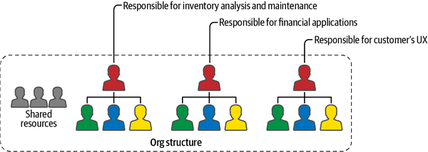
Complex organizations need identity management solutions that distribute control and privileges without creating complexity. Organizations can choose from a number of strategies, such as role-based access control (RBAC), attribute-based access control (ABAC), and mandatory access control (MAC), which I introduced in Chapter 2.
In my opinion, RBAC provides an excellent framework for use with microservices, mainly due to its simplicity, small learning curve, and the presence of extensive tooling that is available in the AWS Identity and Access Management (IAM) services.
As discussed in Chapter 2, the process of using RBAC involves the creation of roles within an organization for each task that is performed by each identity—such as a user, application, or group—within that organization. Access to resources and services is then controlled and restricted to these roles based on the need and context in which this access is desired. Individuals and services are then permitted to assume these roles based on the tasks that they would like to perform. Thus, every activity that is performed by any individual (or service) within an organization involves first assuming a particular role and then using that role to perform the desired activity. This simplifies the access control process since security professionals simply have to apply the principle of least privilege (PoLP) separately to:
The permissions that each role has
The identities that are allowed to assume each role
In this chapter, I will make use of RBAC quite extensively to simplify the process of access control in large and complex organizations.
Throughout the book, I have stressed the importance of the PoLP. The most powerful defense against security attacks is to have fine-grained controls around access and to have a strict application of PoLP.
However, in my experience as a software developer, I have always seen this principle being broken with one common excuse: What if there is an emergency and we need to quickly fix the system? Not granting developers the ability to move fast and fix production issues may result in significant losses for the company! Better to give them more access than required—just in case.
This is a very valid concern that gets in the way of good access management and the application of least privilege in most organizations. It’s not unreasonable for administrators and managers to extend more privileges to developers than is necessary simply out of a fear of being unable to contain a once-in-a-lifetime issue that may require access that’s not granted at the time. In this section, I will discuss two models managers can use to provide controlled permission elevation to developers without compromising the PoLP.
These models are:
In my experience, if your developers can trust the emergency privileges escalation procedures, they will be more likely to accept and adhere to the PoLP.
Before I talk about how the AWS SSM run command enables you to achieve privilege elevation, I will go into a high-level overview of what this model tries to achieve. This model is used for situations where incidents have a clearly defined runbook of actions (a set of predefined steps that need to be performed to mitigate incidents). This assumes your development/operations team (DevOps team) maintains such a runbook.
In this model, developers are provided with tooling (in the form of executable scripts) that elevates their access but restricts it to only the activities they can perform using these scripts.
I will simplify this with the help of an example. Assume that your production environment runs microservices that are prone to deadlocks. In such situations, your DevOps runbook dictates that the simple fix is to restart your production servers. However, in most operating systems, restarting a server requires you to have superuser access, which requires elevated access privileges, thus restricting ordinary developers from mitigating the incident.
In this model, to enable your developers to quickly mitigate such an incident, they are provided access to a script that allows them to reboot the servers, instead of providing them with full-blown superuser rights. This limits the scope of what developers can do in an elevated permissions environment, thus protecting the system from bad internal actors.
On AWS, these scripts are called SSM documents. SSM documents are scripts written using a special syntax; they can be applied to any instance that is managed by AWS SSM. Figure 8-2 shows an example where I created my own SSM document that runs a Unix shell script, which in turn reboots the operating system.
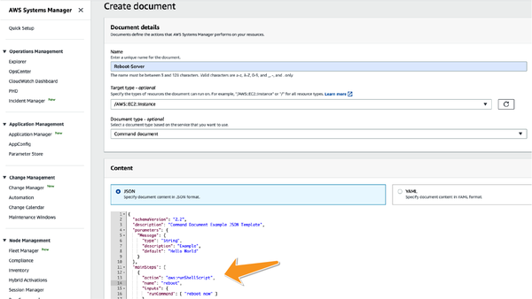
AWS maintains an inventory of documents of their own that covers many typical actions which need to be taken for mitigating incidents. It is always recommended to use their managed document, whenever such a document is available.
The document from Figure 8-2, once created, lives within your account and can be used to run on multiple instances. It can also be shared across accounts, making this a scalable option for mitigating common incidents. However, the onus is on the DevOps team to maintain a set of such documents in order to remedy any incident.
AWS run command documents can be secured using AWS IAM policies that I discussed in Chapter 2. In most situations, a good idea is to create a separate role that is allowed to execute (send) these commands. Your developers can be allowed to assume this role whenever needed. You can apply PoLP there to limit those who can assume this role and the circumstances under which it can be assumed. Every attempt to assume this role can be logged on AWS CloudTrail for additional visibility and auditability.
I will use an example to illustrate the securitization process. Say you have a document you created that can reboot a production AWS Elastic Cloud Compute (EC2) instance. You can create a specific role, say “rebooter,” that is allowed to run this command. Whenever there is a production incident, your developers can assume this role and reboot servers. You can take security a step further by using ABAC. In that, you can qualify the access that this “rebooter” role has to only those SSM documents and EC2 instances that have a specific AWS tag and a value attached to them, such as “rebootable.” You can then tag your production instances with the tag. This way, the “rebooter” role will only be able to reboot instances that an administrator has marked as rebootable.
You can apply least privilege around the rebooter role in the form of ABAC by attaching the following IAM policy to it:
{
"Sid": "VisualEditor1",
"Effect": "Deny",
"Action": "ssm:SendCommand",
"Resource": "*",
"Condition": {
"StringNotLike": {
"aws:ResourceTag/rebootable": "true"
}
}
}
This will ensure that the documents created will be executable only on instances that have an AWS tag—rebootable set to true.
Anytime a developer needs to reboot a production server (which has the AWS tag rebootable set to true), the developer can assume the rebooter role and run the command by going to the “Run command” tab on the AWS Systems Manager tab and selecting the document that you created in Figure 8-2. Figure 8-3 illustrates this flow.
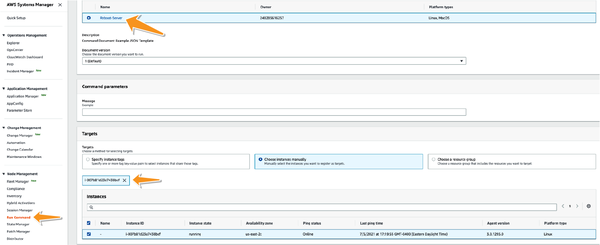
While run command is a great option for incidents that have prescripted solutions, it may be useless against ad hoc incidents. In such situations, security professionals may have no choice but to elevate the access privileges of developers in order to mitigate the incident. One way to achieve privilege elevation is by having an alternate protocol for access control in place called Break-the-Glass (BTG). This protocol deals with emergency access to cloud services or resources when an elevation of privilege is required for disaster mitigation. The term “break the glass” is derived from the action of breaking glass to pull a fire alarm. It describes a quick way for a person without permission to access certain resources, to be granted elevated access privileges during an emergency. This access should be temporary and should be revoked as soon as the critical issue has been mitigated or patched.
Although I often talk about giving elevated (or at times superuser) access to users in the context of BTG protocols, that is not the only place where such a protocol is useful. Access granted can be lateral. As an example, you may wish to grant developer access to an external team member from a different team (working on a different functional domain) to services or resources within your context simply to assist in debugging production issues that may involve both of your teams. The same process has to be followed to grant this temporary access, as is described in the previous section where superuser access is granted to developers.
The BTG process should be made as quick and straightforward as possible in most functioning organizations, so that precious time is not wasted in bureaucracy in case of an emergency. During such an emergency, every action taken by a user who has elevated access should be documented using AWS’s logging mechanisms, including CloudWatch and CloudTrail. Outside of an emergency, however, the organization is free to implement strict and very restrictive access control measures, thus improving the security posture of the organization. Each team within the organization should have quick procedures in place where this switch can happen.
It is important to note that privilege elevation is indeed a compromise to the PoLP. Providing elevated access even during emergencies may open the application up for more security incidents from “trusted insiders,” who may be able to game the system and obtain this elevated access. BTG should only be used as a last resort when other approaches are not feasible for incident mitigation.
Let me show you an example of how organizations can implement such a procedure on AWS while controlling access.
Figure 8-4 demonstrates how RBAC can be used to create a functional BTG protocol within organizations. Assume that you have a resource, Resource A, which is ordinarily not accessible to developers. However, you want to provide access to it in case of emergencies. This access has to be signed off by a senior stakeholder within the company.
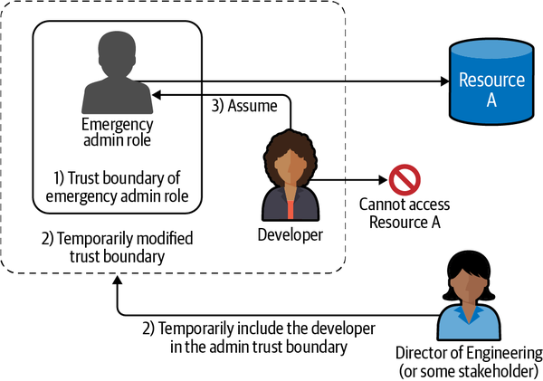
As seen in Figure 8-4, the steps involved may be described as such:
IAM architects come up with emergency situations where elevated access may be needed and groom the access policies of IAM roles that can be useful in mitigating such situations. These roles can continue to be in the organization with strict rules around them, which prevent users and developers within the company from assuming them during normal day-to-day operations.
Security professionals then devise protocols that can be used to confirm that an emergency has occurred. This may be as simple as deferring to the judgment of a senior manager within the company who can simply rule that the elevated access provided to developers for the time being is warranted and worth the risk.
When an emergency event occurs, developers are added to the trust boundary of the emergency administrator’s role. The developers can assume the emergency admin role and access resources and perform actions that they would have been restricted from performing otherwise.
Some points worth noting in Figure 8-4:
“Emergency admin role” can access Resource A. But under normal circumstances this role cannot be assumed by anyone in the company.
The Director of Engineering can control who can assume this “Emergency admin role.” However, they cannot assume the role themselves.
The Developer can assume the role and thus access the resource, but only after the Director of Engineering allows them to.
A permissions boundary is a way in which administrators can assign permissions to other identities by specifying the maximum privileges they can receive. Unlike an IAM policy, it does not grant any new privileges to the recipient. Instead, it specifies the maximum permission that the recipient can have.
As a result, the effective permission after the application of a permission boundary to an IAM identity is always a subset of its IAM policy permissions, as seen in Figure 8-5.
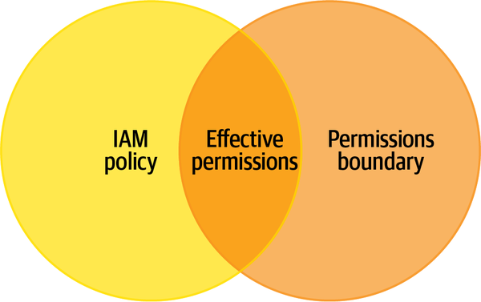
For example, let’s say that you have a team that should work only with AWS Simple Storage Service (S3) or AWS Lambda.
You would then set up the following permission boundary IAM policy condition:
{
"Version": "2012-10-17",
"Statement": [
{
"Effect": "Allow",
"Action": [
"s3:*",
"lambda:*".... <permission to services that this team needs>
],
"Resource": "*"
},
]
}
Any identity that is assigned this permissions policy will, at the most, be able to use AWS S3 and AWS Lambda resources on AWS. This means that if you created a user “Gaurav” with this boundary policy, and if you attached an IAM policy that allows user creation, as defined thus:
{
"Version": "2012-10-17",
"Statement": {
"Effect": "Allow",
"Action": "iam:CreateUser",
"Resource": "*"
}
}
the user “Gaurav” would still not be able to create new users because the boundary policy does not allow iam:CreateUser in its statement. The effective permission of the user will end up being the least of the two sets of permissions (those provided by the boundary policy and those provided by its IAM policy).
In small organizations, managing teams and cloud resources may be fairly simple. You may have a cloud administrator (or a centralized team of administrators) who is responsible for enforcing the security policy of the organization. The cloud administrator is responsible for carefully evaluating permissions of all users in all teams in the organization and implementing the PoLP across all of these users. They are also responsible for running and maintaining cloud resources across all teams. However, as the organization grows, such a centralized team may become harder to scale. Being able to have a centralized team control an entire company and its identities can pose a challenge.
This may mean delegating some cloud-administration tasks to leaders or developers within teams, rather than to centralized administrators. However, this team-level delegation must be qualified so that each team can only be given the privileges it needs to do its job (as outlined in the PoLP). This can be achieved by using permission boundaries.
Obviously, you can also assign permission boundaries to the members of a team based on the services they use. So if a team uses AWS Lambda, you can add a permission boundary that allows access only to AWS Lambda. However, the one tricky aspect is to allow these teams to manage identities of the team members.
To illustrate, let us consider a team (Team X) that uses AWS Lambda. You also want Team X’s manager, Bob, to create or delete users from the team. So you can create a permission boundary (PBX) for all users of this team that only allows them access to AWS Lambda and the ability to create new users.
The boundary policy PBX can look something like this:
{
"Version": "2012-10-17",
"Statement": [
{
"Sid": "BasicPermissions",
"Effect": "Allow",
"Action": [
"iam:*", <ability to add new users to the team>
"lambda:*".... <permission to services that this team needs>
],
"Resource": "*"
},
]
}
Now, let’s assume you have a secret database that stores sensitive information in your account, and let’s assume that Team X does not need to access this data. As long as all the users from Team X are assigned the permission boundary PBX, administrators can be assured that access to the sensitive data can be restricted for Team X. However, since Bob from Team X is allowed to create new users, nothing stops Bob from creating a new user (Alice) who does not have such a restrictive policy assigned to her. Alice now has access to the secret database, which she should not. Figure 8-6 illustrates this example.
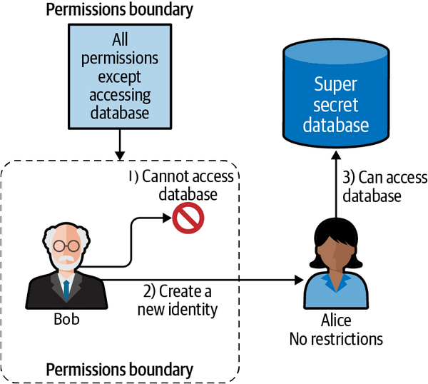
To prevent such a permission escalation, instead of the original boundary policy, you can use a slight tweak to the boundary policy as suggested by AWS.
Consider a permissions boundary called PBY that allows Bob access to AWS Lambda and to create users. You can add an extra condition to PBY that says, “You can only create new users that have PBY attached to them.”
This can be achieved by adding a condition to the iam:* permission:
{
"Sid": "CreateOrChangeOnlyWithBoundary",
"Effect": "Allow",
"Action": [
"iam:CreateUser",
"iam:DeleteUserPolicy",
"iam:AttachUserPolicy",
"iam:DetachUserPolicy",
"iam:PutUserPermissionsBoundary",
"iam:PutUserPolicy"
],
"Resource": "*",
"Condition": {"StringEquals":
{"iam:PermissionsBoundary":
"arn:aws:iam::123456789012:policy/PBY"}}
},
CreateOrChangeOnlyWithBoundary ensures that a new user can be created only if the permissions boundary arn:aws:iam::123456789012:policy/PBY is added to the newly created user and not otherwise.
This means that if Bob creates user Alice, then Alice will still have PBY as a boundary and still will not be able to access the database. In addition, if Alice had the permission to create users, then the new users will still have such a boundary added to them, thus making it impossible to breach privileges by creating new users. You should also restrict these users from being able to change or delete PBY. Such a policy would look like this:
{
"Sid": "NoBoundaryPolicyEdit",
"Effect": "Deny",
"Action": [
"iam:CreatePolicyVersion",
"iam:DeletePolicy",
"iam:DeletePolicyVersion",
"iam:SetDefaultPolicyVersion",
"iam:DeleteUserPermissionsBoundary"
],
"Resource": [
"*"
]
}
Figure 8-7 illustrates the effect of adding these policies and permissions boundaries to delegate responsibilities. As seen, the resulting IAM structure ensures complete control without the risk of unintended privilege escalation.
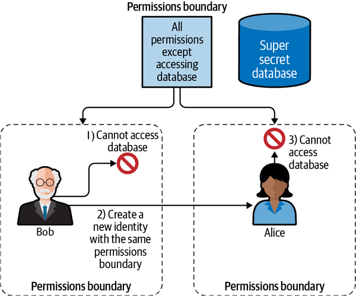
To sum up, SID BasicPermissions ensures that any user within the account will have access only to the AWS Lambda that the team uses or to create new users for the team. SID NoBoundaryPolicyEdit will ensure that members of this team cannot change the basic permissions they have and thus cannot escalate their access privileges. And finally, CreateOrChangeOnlyWithBoundary will ensure that any new user who is created by a member of this team will continue to have the same restrictions that were put in place on the genesis user.
By now, I have made the case for having independent teams that are granted sufficient autonomy in managing their own identities and resources. With permissions boundaries, organizations can safely begin delegating administrative tasks to their teams. It is by far the best approach to scalability if your team is aligned around functionality, as with microservices.
In discussing org charts and team structures in large companies, I want to underscore the fact that in large firms, individual teams prefer their own autonomy when it comes to performing their duties. On the other hand, stakeholders and upper management may be keen on applying checks and balances to the power held by each team. In most companies that I have seen, this results in a tug-of-war, making it difficult to apply PoLP.
In this section, I would like to talk about how this tug-of-war unfolds itself while setting up AWS accounts and other cloud infrastructure. At the outset, you want individual teams to innovate and quickly ship code to production, thus adding value to the company. These teams are also best equipped to maintain this infrastructure since they work closely with it every day. Therefore, it makes sense to empower each team with as much control as possible over their cloud infrastructure. But at the same time, you want to protect the company’s resources from all the internal threats, such as disgruntled employees, inexperienced engineers, or possible intruders.
In my experience, most companies start their cloud journey by setting up one single AWS account to provision all of their cloud resources and infrastructure. Initially, such a setup may seem easy and simple since you only have to worry about a single account. You can hire cloud administrators who only have to think of a single account and apply PoLP to all the identities in this account. Upon terminating employees, you do not have to delete their accounts from multiple places. However, if you end up putting a lot of unrelated teams in the same account, you will increasingly observe that it becomes more and more difficult to scale such a cloud organization, especially when it comes to domain-driven organizations.
To begin with, you will immediately experience the fact that applying PoLP in such a large account with unconnected identities is a nightmare. Cost separation and auditing also become problematic due to the inability to divide the infrastructure cleanly. Overall, complexity around the management of identities and resources just exponentially becomes harder.
But apart from just pure management complexity, there are some very significant security implications, the primary issue being that of blast radius. If the root user or any administrator or power user of this account gets compromised, the entire account with all of your infrastructure is now at risk of being compromised.
Also, for compliance purposes, if all the resources end up in the same account, compliance auditors may consider all the resources to be within the scope of the audit. This may exponentially increase the complexity of an audit and thus make regulatory compliance a nightmare.
Hence, AWS recommends the use of a multiaccount structure where each business development team has its own account. While there is no specific guideline on how many teams each organization should have, decomposing an entire organization into individual accounts per business domain is a pattern that provides sufficient autonomy and isolation for a microservice environment.
Since domain-driven teams are likely to align their application domains with the organizational structure within the company, having an account per bounded context will make sure that teams working on each business domain have sufficient autonomy.
However, merely delegating all administrative responsibilities to the teams may not be feasible, and companies may prefer to have control and governance over the functioning of their accounts. This is where AWS Organizations comes in handy. In this section, I will highlight the basics of creating team-level accounts and then dive deeper into AWS Organizations.
A multiaccount structure is what provides domain-driven teams with the autonomy they need to innovate and quickly add value without going through a centralized bureaucratic process. AWS Organizations, on the other hand, serves as a governing body that permits administrators and senior management to add controls over the powers that individual teams have within their account. This way, AWS Organizations along with a multiaccount structure can provide an environment of controlled autonomy to organizations with domain-driven teams.
In AWS, a sufficient level of autonomy can be granted to different teams by providing each team with a separate AWS account. This will ensure that the management of identities, resources, and security policies can be cleanly separated without interfering with one another. For the purposes of monitoring, security, and consolidated billing, AWS Organizations allows administrators to group these separate and autonomous accounts, thus maintaining governance and control over highly functional autonomous teams.
For security professionals, there are many reasons why it makes sense to split teams and give them individual AWS accounts, as mentioned in the AWS documentation. I will highlight a few of them here:
It is not uncommon for large corporations to have hundreds of AWS accounts, each responsible for a business arm or initiative.
Going back to Chapter 1, if you wanted to implement a decentralized application with a team-account structure that is responsible for maintaining individual parts of the application, the team structure could look something like what is illustrated in Figure 8-8.
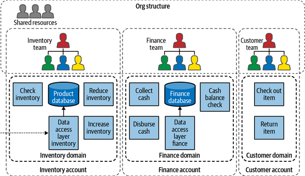
Assigning separate accounts to every team allows for the autonomy that teams desire in large organizations. However, simply asking every team to have their own account may not be enough since companies have checks and balances. They may want to implement controls that protect them from internal threats such as disgruntled employees, rogue teams, and so forth. These controls are provided by AWS Organizations, which I will talk about in the next section.
Now that I have established why it’s important for organizations to have independent accounts for each bounded context, I’ll discuss how complex businesses can support the creation of such independent accounts without compromising control or governance by using AWS Organizations.
Companies typically have an organizational structure that already includes some measure of control and governance. Roughly speaking, in many large companies, there are divisions aligned to their business domains, and each division may hold departments that are aligned to specific functions within the divisions. Figure 8-9 represents a sample organization with multiple products (or services) and departments.
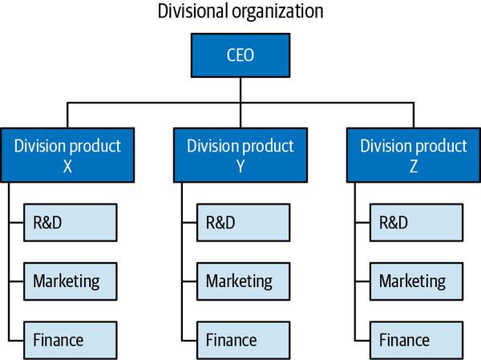
This section aims to ensure that the independent account structure (built based on the business functionality your application provides), discussed in “AWS Accounts and Teams”, follows the same hierarchy as the team and org structure of the company. This makes governance easier and more manageable for cloud administrators.
I recognize that the AWS account structure does not have to follow the exact same structure as your organization, but since a mirroring of org structure is unavoidable in many complex applications (as evidenced through the research around Conway’s law), I am going to assume that your internal org structure is similar to your business functionality.
AWS Organizations is a great tool for creating governance models for accounts that scale well in large organizations. AWS Organizations is the way to introduce a top-level umbrella account, called a management account, that can help create a hierarchy of AWS accounts within your organization. With AWS Organizations, you can add existing accounts to this organization or create another AWS account for each department or division in this organization. The accounts that are added subsequently to the organization are called member accounts. Thus, you can set up a hierarchy of member accounts that is governed by a centralized management account at the organization level.
Figure 8-10 shows how AWS Organizations can be enabled in the AWS Management Console for the “Management account” and “New member accounts.” Using AWS Organizations, companies can create a hierarchical governance structure for all of their accounts.
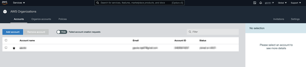
Once created, the management account can be a top-level entity and the body responsible for ensuring the access, rights, and privileges of all of the individual accounts. The organization can then decide how much autonomy each account under its umbrella has and can ensure that least privilege is observed while granting autonomy to high-functioning teams. As seen in Figure 8-11, you can create new accounts or add existing accounts to the organization in the AWS Management Console.
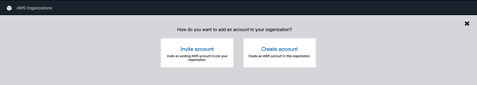
Whenever a new account is created under the organization, the resulting account automatically has a role OrganizationAccountAccessRole that is automatically created in the member accounts. Any administrator or superuser from the top-level organization account can then assume this role and make changes in the member account, thus having the ability to administer members and maintain governance. If you register an existing account under the organization, however, such a role has to be manually created.
AWS Organizations can also help in setting up a consolidated billing solution for large companies. You can consolidate billing and payment for multiple AWS accounts with the consolidated billing feature in AWS Organizations. The top-level account in AWS Organizations can thus pay for all of its member accounts. Therefore, the accountants within your company can obtain access to the organization’s account, while not requiring granular access to individual departments or domains within the company, thus preserving least privilege.
After having set up an AWS Organization and registered your accounts under this organization, you can see how the various bounded contexts within your organization can have sufficient autonomy while still not compromising on security. However, in large companies, the number of accounts can still get out of hand and may be difficult to manage. AWS accounts have the same need for a hierarchical structure as departments within companies, in order to establish proper control. To achieve such a structure, AWS provides us with two important tools.
Each AWS account can belong to an organizational unit (OU). An OU is a way of classifying entities within an organization into one common group. With OUs, administrators have the flexibility of placing each member account either directly in the root or under one of the OUs in the hierarchy. If you have used directory services such as Active Directory or Lightweight Directory Access Protocol (LDAP), the term organizational unit may not be new to you. Very much in a similar way, in order to reduce the complexity within AWS Organizations, AWS provides administrators with OUs that can be administered as a single unit and can be used to generate a hierarchical structure similar to most org charts. This greatly simplifies account management.
Nesting is possible with OUs, which means each OU can belong to another OU. This allows administrators to create treelike hierarchies of OUs that better reflect a company’s departmental hierarchy. By using OUs, AWS Organizations administrators can create hierarchies of AWS accounts that better reflect the organizations to which these AWS accounts belong.
Service control policies (SCPs) are the other tool that organizations have for exercising control over individual AWS accounts or OUs. You can use SCPs to control the permissions for all accounts and OUs in your organization. SCPs alone are not sufficient to grant permissions to the accounts in your organization. Instead, an SCP defines the limits of permissions that can be granted in each account or OU. The user’s effective permissions are the intersection of what is allowed by the SCP and what is permitted by the IAM.
Using OUs, each company can create a hierarchical structure within an AWS organization. Once such a structure is created, it is easier to sharpen controls to incorporate the entitlements within the organization into the access control policies that you may set up. Figure 8-12 shows a sample organizational hierarchy represented in the form of an AWS Organizations setup using OUs and SCPs.
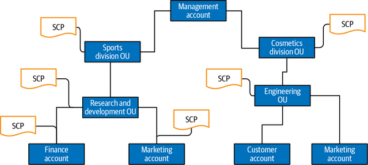
Now, I will walk you through a couple of SCP recipes that can be employed by organizations to create a secure yet decentralized organization. AWS maintains a list of many suggested policies that can be used by administrators to create a very secure multiaccount setup in organizations.
The common theme in all of these SCPs is the use of the condition clause in IAM policy statements that I discussed in Chapter 2. You can use such a clause to deny actions to various teams through an SCP.
A few examples of such use cases are:
Ensuring that the teams tag the resources they create properly
Allowing the creation of only specific types of resources on AWS
Disallowing the users from disabling AWS CloudTrail or CloudWatch logging or monitoring
Preventing users from sharing resources externally using AWS Resource Access Manager (RAM)
AWS tags make it very easy to categorize resources, for example, by purpose, owner, and environment. They also help in improving visibility over costs and budgets. Hence, it is important to ensure that every resource is tagged appropriately. However, if the control to create resources is decentralized, it may be difficult for administrators to enforce such a strict tagging policy. AWS SCPs can be employed in such a situation to make sure that every team uses the right tags while creating resources. This will also help in monitoring the activity of each team since each resource will be tagged appropriately.
The following policy shows how you can ensure that you cannot run instances in the account if the request does not include a MarketingTeam tag:
{
"Sid": "DenyRunInstanceWithNoProjectTag",
"Effect": "Deny",
"Action": "ec2:RunInstances",
"Resource": [
"arn:aws:ec2:*:*:instance/*",
"arn:aws:ec2:*:*:volume/*"
],
"Condition": {
"Null": {
"aws:RequestTag/MarketingTeam": "true"
}
}
}
Another common scenario is where an organization would like to delegate control of resources to child accounts. However, you want to restrict them from creating any expensive resources. So you would like to allow team members to only create EC2 instances that are of instance type t2.micro. This can be achieved using IAM policies such as the following:
{
"Sid": "RequireMicroInstanceType",
"Effect": "Deny",
"Action": "ec2:RunInstances",
"Resource": "arn:aws:ec2:*:*:instance/*",
"Condition": {
"StringNotEquals":{
"ec2:InstanceType":"t2.micro"
}
}
}
This statement will ensure that the child account is not able to create any EC2 instance that is not a t2.micro.
Another good way to utilize AWS Organizations especially for microservice architectures is to create purpose-built accounts. A purpose-built account is an account that is assigned a very specific task in an organization. Typically, this is a cross-cutting task (a task that affects multiple domains) within the application’s architecture, and hence is difficult to classify in one account. Logging, monitoring, data archiving, encryption, and data tokenization are some examples of typical tasks that many applications perform that generally tend to extend beyond typical domains.
Purpose-built accounts enable organizations to carefully and successfully carve out critical cross-cutting functionality (functionality that touches multiple domains) into a separate account. This way, you can apply least privilege to this account and restrict access to very few users while the rest of the application can continue to run. I have already given a couple of examples of purpose-built accounts in Chapter 3 when I talked about having a separate account that hosts customer master keys (CMKs) for different domains.
Figure 8-13 illustrates a typical organization that has dedicated accounts for the purposes of IAM, CMKs, and maintaining logs. Any user from a different account who wants to access logs, for example, can be allowed to assume a role in this account, controlled by using trust boundaries.
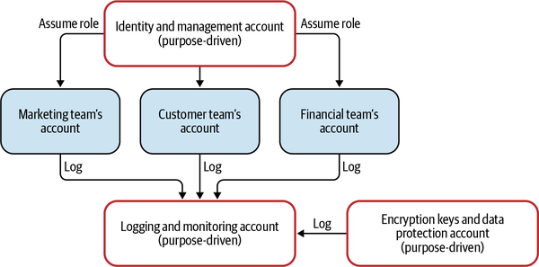
Purpose-built accounts simplify the process of granting privilege and access to critically sensitive functions by not bundling these activities with the rest of the domain logic.
Having explained the concept of AWS Organizations and a multiaccount structure, I will now describe some of the tools that AWS provides that can be leveraged to make a multiaccount structure more powerful.
Securing an individual account is at times quite different from securing an entire organization. In an individual account, you can have clearly defined users. However, in an organization, you have to account for the possibility of employees transitioning in and out of the organization. Therefore, having a plan to ensure that the company continues to function in spite of changing employee bases is important. AWS Organizations allows for a superuser group to oversee each team and keep things in order. Hence, it is even more crucial to secure the “management account” by preventing unauthorized access and privilege escalation.
AWS provides some ways of securing the management account. The most important task in ensuring the security of the management account is to have strong identity protection around it.
Security professionals should assume that the management account is a highly visible target, and hence will be more attractive to attackers. Some common ways in which attackers may gain entry may involve the use of password-reset procedures in order to reset the passwords of privileged users. Hence, the process to recover or reset access to the root user credentials should have checks and balances in place to ensure that a single user is not able to compromise the root access to the management account.
Enabling multifactor authentication (MFA) for every identity within this account is critically important. An imposter or a hijacked identity can inflict significantly more harm to the entire organization if this identity belongs to the management account than any of the other OUs.
Finally, it is even more important than any other account to follow the PoLP in granting access to this account. Each and every access should be carefully scrutinized and justified. Furthermore, each activity should be monitored on this account and every use case should be documented for compliance and scrutiny.
Once you have separate accounts for separate bounded contexts, you naturally want to find a way in which the resources in these accounts can be made to work with one another.
For example, let’s say that you have a virtual private cloud (VPC) inside a particular context and would like to set up rails for communication with other contexts. Chapter 5 already talked about the existing tools that architects have to set up such communication channels between contexts. These include VPC peering or VPC endpoints. In this chapter, however, I will introduce a slightly different approach to sharing: AWS Resource Access Manager (RAM).
While most microservice architectures don’t share resources across contexts, there are some very specific situations where it’s OK and even necessary to relax such a rule. Purpose-driven accounts are one such example, where some of the resources (for example, VPC) need to be shared with other accounts. AWS RAM is the answer to such unique situations where resource access needs to be shared while maintaining control and autonomy. I will share an example of such a pattern soon.
AWS RAM allows accounts to share certain resources within their accounts with other external accounts. This way, in multiaccount structures, contexts are not strictly bound by account-level structures and can still continue to have communication and shared resources.
Now, resources can be shared with:
Any specific AWS account
Within an OU
Within the entire AWS Organization
Once shared, the resources can be accessed by the external accounts natively, as if these resources were part of their own accounts.
Sharing resources is slightly different from allowing cross-account access that I have talked about in the other accounts. With AWS RAM, even though the sharing account owns, controls, and maintains the shared resources, these shared resources can be accessed as if they are a part of the destination account.
Figure 8-14 shows a set of accounts sharing resources using AWS RAM.
Recall from Chapter 2 that I talked about the concept of identity federation, which involves setting up an identity provider (IdP) that can be used to delegate the process of authentication in case you have multiple sets of identities in an organization. I would now like to provide you with an alternative to the original identity federation option in the form of AWS Single Sign-On (SSO).
AWS SSO can be used in two cases. You could either log into a third-party service using AWS SSO or ask AWS to trust a third party’s SSO. In other words, AWS SSO can act as the provider of identities for other cloud services that may require SSO-based login or access. Or it can act as the consumer of a third-party identity service, thus trusting a third-party IdP for its own identity federation.
AWS realized that this use case of trusting a third-party trusted provider is far too common in most organizations, and hence provided users with AWS SSO to simplify the setup of SSO for organizations. AWS SSO makes it easy for users to log in to multiple accounts and applications in a single place. AWS SSO enables a centralized administrator to control AWS Organizations access for all your accounts in a single place. Your AWS SSO account configures and maintains all permissions for your individual accounts automatically, without requiring any additional work on your part. AWS SSO can be enabled in the AWS Management Console, as seen in Figure 8-16.
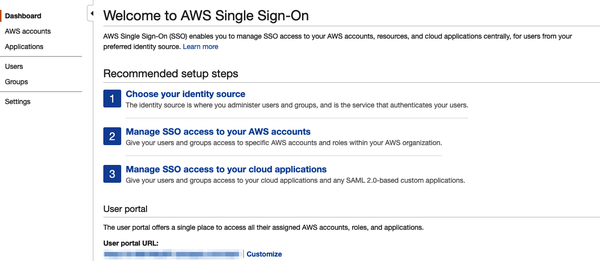
Once set up, AWS SSO can then manage the user’s permissions across your organization centrally without requiring duplication of identity and access-related activities. User termination is also simplified with the help of AWS SSO, thus keeping your cloud resources safe from disgruntled employees.
AWS SSO is designed to integrate with AWS Organizations. So if you have a multiaccount setup with multiple OUs, you do not have to configure multiple account access and can rely on AWS SSO providing the right permissions to the users of your organization.
SSO is one of those circumstances where improving the security of the design yields the same result as improving its convenience. The use of SSO for identity management in almost every organization leads to more secure and systematic management while still offering convenience to employees. I recommend you take full advantage of this service.
Any organization would be failing in its duty to safeguard identities if they do not emphasize the importance of MFA to its users. Most security policies rely heavily on the ability of end users to be able to use MFA for authentication. There is a lot of literature online highlighting the importance of MFA, so I won’t get into the benefits here. A few examples can be found at OneLogin, Expert Insights, and NIST.
As an administrator, you want to ensure that principals who have access to a particular resource have passed the additional check using MFA. You can add the condition "aws:MultiFactorAuthPresent": "true" to an IAM policy to ensure that access is granted only to users that have gone through MFA:
{
"Version": "2012-10-17",
"Statement": {
"Effect": "Allow",
"Principal": {"AWS": "ACCOUNT-B-ID"},
"Action": "sts:AssumeRole",
"Condition": {"Bool": {"aws:MultiFactorAuthPresent": "true"}}
}
}
This condition evaluates to true if MultiFactorAuth is present on the account of the user who is trying to access this resource. This way, you can ensure the security of your resources by making sure that individual identities have used MFA to log in to AWS.
MFA becomes tricky when using a multiaccount setup. MFA always has to be enabled in the trusted account that the user first authenticates against. Furthermore, it is this trusted account’s responsibility to guarantee the credibility of the MFA. Since any identity with permission to create virtual MFA devices can construct an MFA and claim to satisfy the MFA requirement, you should ensure that the trusted account’s owner follows security best practices.
It is almost always a good idea to enforce MFA on all the accounts within the organization.
I have shown you the tools that AWS administrators can use to tame organizational complexity, so now I will go over how these tools come together to simplify identity management and cloud architecture without sacrificing convenience. In this section, I will outline the steps that security designers can take to set up such a cloud-based system.
Let’s assume that your application is an ecommerce website that offers various services to end users. I will also assume that you have a DDD for most components of your application, allowing you to set up a STOSA-type application. Hence, you can split your application into bounded contexts that align with the functional domains. As a result of what I have explained in this chapter, you are able to align your engineering teams with the business domain of the application.
You can use AWS Organizations to set up an organization for your entire application and then set up a multiaccount structure.
Each bounded context in your company can have its own AWS account. This will allow individual teams to be highly autonomous. These accounts can have multiple identities within themselves that will be defined using roles. Roles will be used as placeholders to design permissions and privileges for employees and services.
Apart from the accounts that represent individual bounded contexts, you can have a few purpose-built accounts that are used for certain shared and cross-cutting services. Thus, you can have an account for storing all of the log files and for monitoring purposes.
You can also have an account that is dedicated to identity management. This is the account that will hold all of the identities of your application. Each employee within your organization can first authenticate against this account. Upon authenticating, the employees can then assume roles within other accounts by exchanging their credentials from the identity management account using AWS Security Token Service (STS). I have already talked about the process of assuming roles in Chapter 2 and hence I will not go into its details here.
The authentication process can be further simplified by using AWS SSO in order to federate identities to third-party IdPs such as Microsoft Active Directory, Okta, JumpCloud, and so forth. This way, the IT service administrators can control the access and lifecycle of individual users by keeping their external identities up to date.
Figure 8-17 shows how you can use AWS Organizations and RBAC to simplify the management of access in large corporations.
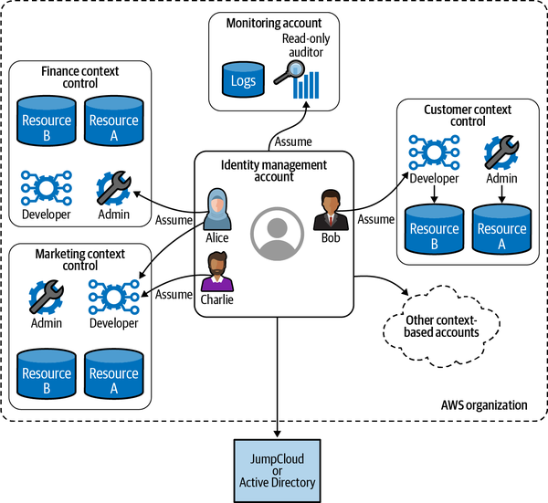
The best part about such a setup is the simplicity and granularity that it adds to each individual account without compromising on security or functionality. It is significantly easier to scale new teams by simply delegating the responsibility of administration, identity management, and security to responsible teams instead of trying to set up a centralized security administration team.
Each team can control its own bounded context and, as a result, its own AWS account. SCPs can be used to control the permissions that each of these AWS accounts get in order to perform their jobs. As an example, from Figure 8-17, the team that is responsible for the marketing bounded context will be responsible for administering the “Marketing context account.” This team will create roles within this account that will have the relevant permissions required for the smooth functioning of their day-to-day operations. The marketing team can apply the PoLP to each of its roles within its own account and only allow its team members to assume these roles using trust boundaries. If a new developer joins this team, the team leads can simply add this user to the trust boundary of the developer role. Thus, the teams have complete control of the identity management.
On the other hand, the company can use the Identity Management Account to manage the identities in the organization. Each employee that has onboarded into the organization can have an identity in this account. This account can further use AWS SSO to federate identities to an external IdP such as Active Directory, Okta, or JumpCloud.
The users from this Identity Management Account can then assume roles within their team’s accounts and perform their day-to-day activities as members of their respective teams while still being employees of the company, thus maintaining their identity in a centralized account and location.
Whenever an employee resigns or a company decides to terminate an employee, the company administrator can simply delete the identity of the terminated employee from the Identity Management Account and this employee will then lose access to all of the other accounts within the organization. This way, the organization does not need to replicate identity management across multiple teams and can have an efficient onboarding/off-boarding process.
In this chapter, I made a case for autonomy in the presence of strong security measures. Users can be granted this autonomy regardless of whether they utilize a strong RBAC mechanism in a single account structure or they actively create new accounts. I have also introduced you to tools that administrators can use to ensure that the autonomy granted to individual teams does not sacrifice the governance or the security of the organization. It is my strong belief that a highly functional company invests in making their employees productive through continuous investment into operational efficiencies, which ultimately result in the addition of value. This investment can only come through a combined effort where security professionals work with developers and other employees to provide security assurance to managers. A good operational environment also ensures that if a security incident takes place, the right set of people is empowered to take quick action to mitigate any impact or fallout. Chapter 9 will discuss these steps in detail and talk about how an organization can plan for and be prepared to respond to security incidents.